무선설비산업기사 (2013-03-17 기출문제)
1과목: 디지털 전자회로
1. 제너다이오드에서 불순물의 도핑 레벨을 높게 했을 때 나타나는 현상으로 틀린 것은?
- 역방향 제너전압이 감소한다.
- 매우 좁은 공핍충이 형성된다.
- 강한 전계가 공핍층 내부에 존재하게 된다.
- 역방향 제너저항이 감소한다.
(정답률: 78%)

2. 다음 중 직류 전원회로의 구성 순서로 옳은 것은?
- 정류회로→변압회로→평활회로→정전압회로
- 변압회로→정류회로→평활회로→정전압회로
- 변압회로→평활회로→정류회로→정전압회로
- 변압회로→정류회로→정전압회로→평활회로
(정답률: 84%)
3. 단상 반파 정류회로의 맥동률은 얼마인가?
- 0.48
- 1
- 1.21
- 0.5
(정답률: 85%)
4. 다음의 연산증폭기에서 V1=5[V], V2=2[V], V3=3[V]일 때 출력전압 Vo는?
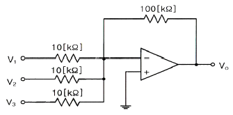
- -100[V]
- 100[V]
- 155[V]
- -155[V]
(정답률: 79%)
5. 이상적인 연산증폭기(OP AMP)의 특징으로 옳은 것은?
- 전압이득이 적다.
- 출력 임피던스가 높다.
- 오프셋이 “1”이다.
- 통과 주파수대역이 무한대이다.
(정답률: 66%)
6. 다음 회로에 대하여 입력신호 Vin = 5sin(ωt)일 때 출력파형은? (단, 제너다이오드의 순방향 전압은 0.7[V]이고, 제너전압은 4.7[V]이다.)
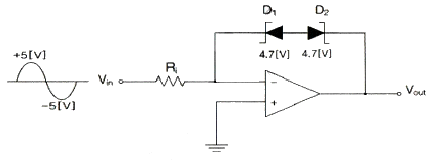
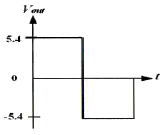
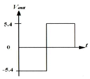
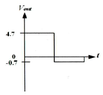
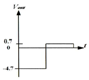
(정답률: 76%)
7. B급 전력증폭기의 최대효율을 백분율로 표시하면 어떻게 되는가?
- 25[%]
- 48.5[%]
- 78.5[%]
- 98.5[%]
(정답률: 88%)
8. 다음 발진기 중 정현파 발진기에 속하는 것은?
- 하틀레이 발진기
- 멀티 바이브레이터
- 블로킹 발진기
- 톱니파 발진기
(정답률: 71%)
9. 하틀레이(Hartley) 발진 회로의 발진 조건(L 분할형)은?
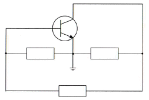
- B-E 사이 : 유도성, E-C 사이 : 유도성, B-C 사이 : 용량성
- B-E 사이 : 용량성, E-C 사이 : 유도성, B-C 사이 : 유도성
- B-E 사이 : 유도성, E-C 사이 : 용량성, B-C 사이 : 유도성
- B-E 사이 : 용량성, E-C 사이 : 유도성, B-C 사이 : 용량성
(정답률: 78%)
10. 주파수변조에서 반송파의 전력이 10[W], 최대주파수편이 ⊿f=5[kHz] 신호파의 주파수 fs=1[kHz]인 경우 변조지수 mf는?
- 3
- 4
- 5
- 6
(정답률: 79%)
11. 다음 중 정보 전송시 대역폭 효율(bps/Hz)이 가장 우수한 변조 방식은?
- 4PSK
- FSK
- ASK
- 16QAM
(정답률: 87%)
12. 다음 그림과 같은 A의 정현파 파형을 기준 레벨을 중심으로 B와 같은 디지털 신호로 바꾸고자 하는 경우에 사용되는 회로는 무엇인가?
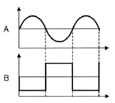
- 다이오드 펌핑 회로
- 슈미트 트리거 회로
- 단안정 발생 회로
- 블록킹 발진 회로
(정답률: 88%)
13. 다음 중 그림과 같은 회로의 명칭으로 적합한 것은?
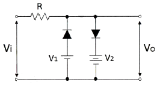
- Rectifier Circuit
- Clamping Circuit
- Slicer Circuit
- Amplifier Circuit
(정답률: 71%)
14. 다음 불 대수의 정리와 관련 있는 것은?
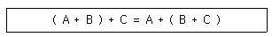
- 교환법칙
- 결합법칙
- 분배법칙
- 부정법칙
(정답률: 84%)
15. 다음에 열거하는 회로 중에서 일반적으로 플립플롭을 이용하여 구성하는 회로가 아닌 것은?
- 시프트 레지스터
- 카운터
- 분주기
- 전가산기
(정답률: 77%)
16. 에지 트리거 J-K 플리플롭의 논리기호로 옳은 것은?
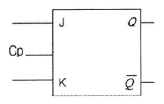
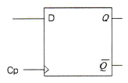
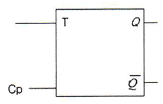
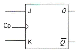
(정답률: 84%)
17. 다음의 수행 내용은 메모리 쓰기 동작시 MAR(Memory Address Register)와 MBR(Memory Buffer Register)에 대한 순서를 나타내고 있다. 올바른 순서는 어느 것인가?
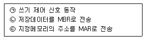
- ㉠ → ㉡ → ㉢
- ㉠ → ㉢ → ㉡
- ㉡ → ㉠ → ㉢
- ㉢ → ㉡ → ㉠
(정답률: 71%)
18. 다음 회로도의 명칭으로 옳은 것은?
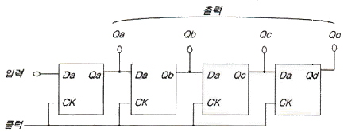
- 병렬입력-직렬출력 시프트레지스터
- 병렬입력-병렬출력 시프트레지스터
- 직렬입력-직렬출력 시프트레지스터
- 직렬입력-병렬출력 시프트레지스터
(정답률: 76%)
19. 다음 디지털 IC의 종류 중 Fan-out이 큰 순서로서 옳은 것은?
- TTL > RTL > DTL > C-MOS
- C-MOS > TTL > RTL > DTL
- TTL > C-MOS > RTL > DTL
- C-MOS > TTL > DTL > RTL
(정답률: 77%)
20. 4비트 5진 계수기의 상태를 올바르게 나타낸 것은?
- 0000 → 0001 → 0010 → 0011 → 0100 → 0000
- 0000 → 0001 → 0010 → 0100 → 1000 → 1001
- 0001 → 0010 → 0011 → 0100 → 0101 → 0000
- 0001 → 0010 → 0100 → 1000 → 1001 → 0000
(정답률: 87%)
2과목: 무선통신 기기
21. AM 송신기의 전력증폭기 기능으로 가장 옳은 것은?
- AM 변조기에서 신호파를 증폭한다.
- 발진기 출력인 반송파를 증폭한다.
- 필요한 RF 출력 전력을 얻기 위하여 이용된다.
- 부하의 변동이 발진기에 미치는 영향을 방지한다.
(정답률: 70%)
22. 중간주파 증폭부가 요구하는 사항이 아닌 것은?
- 통과 대역폭이 좁을 것
- 저잡음 특성을 가질 것
- 상호 컨덕턴스와 전류 증폭율이 클 것
- 이득, 주파수 및 위상 특성이 평탄할 것
(정답률: 61%)
23. FM 송신기에서 사용되는 pre-emphasis 회로에 관한 설명 중 옳은 것은?
- 저역통과필터(LPF) 기능을 수행한다.
- 회로는 적분회로로 설계한다.
- 전력증폭률이 높아진다.
- S/N비를 개선시킨다.
(정답률: 76%)
24. 디지털 데이터 “0”과 “1”을 FSK 통신 방식으로 변조하기 위하여 몇 개의 반송파가 필요한가?
- 1개
- 2개
- 3개
- 4개
(정답률: 87%)
25. AM 송수신기에 대한 다음 설명 중 잘못된 것은?
- 아날로그 송수신기의 한 종류이다.
- FM 송수신기에 비해 구조가 간단하다.
- 주로 단파대에서 많이 사용된다.
- 잡음에 강해 품질이 우수하다.
(정답률: 80%)
26. 위성회선의 다원접속방식 중 주파수의 이용효율은 낮으나 시스템의 구성이 간단하여 제반 비용이 적게 드는 방식은?
- SDMA
- CDMA
- TDMA
- FDMA
(정답률: 70%)
27. 다음은 위성통신에 사용되는 안테나이다. 좁은 지역에 Spot beam을 만드는데 적합한 안테나는 다음 중 어느 것인가?
- 파라보라(parabora) 안테나
- 무지향 안테나
- 헤리컬(helical) 안테나
- 롬빅(rhombic) 안테나
(정답률: 67%)
28. 전송 신호가 전송 매체를 통해 전달될 때 일부 신호가 열로 변하여 에너지가 손실되는 것은 무엇이라 하는가?
- 누화
- 열잡음
- 왜곡
- 감쇠
(정답률: 65%)
29. 주파수가 높아짐에 따라 문제가 되는 전자 주행시간을 역이용한 것으로 M/W의 발진과 증폭에 사용되는 전자관은 무엇인가?
- 증폭기
- 자전과
- 진행파관
- 클라이스트론
(정답률: 63%)
30. 마이크로파 다중통신방식에서 전파손실을 경감시키기 위한 반사판 사용방법 중 적절치 못한 것은?
- 입사가 얕은 경우는 반사판을 2장 사용한다.
- 반사점에서 입사각과 반사각은 각각 90°로 한다.
- 반사판의 위치는 송수신점 사이의 중앙부근에 둔다.
- 반사판의 면적을 크게 한다.
(정답률: 82%)
31. 신호 수신시 초단에서의 증폭이 잡음에 가장 영향을 미친다. 이에 관련되는 소자는?
- Power Amp.
- LNA
- IF Amp.
- AGC Amp.
(정답률: 80%)
32. 다음 중 AC(교류) 전압을 DC(직류) 전압으로 변환시키는 장치는?
- AVR(Automatic Voltage Regulator)
- UPS(Uninterruptible Power Supply)
- 인버터(Inverter)
- 컨버터(Converter)
(정답률: 79%)
33. 콘덴서 입력형 평활회로에서 맥동률을 감소시키는 방법으로 부적합한 것은?
- 평활용 쵸크 코일의 인덕턴스를 크게 한다.
- 입력측 평활용 콘덴서의 정전용량을 크게 한다.
- 출력측 평활용 콘덴서의 정전용량을 작게 한다.
- 교류 입력 전원의 주파수를 높게 한다.
(정답률: 72%)
34. 고정된 교류전원으로부터 가변의 교류 출력전압을 얻기 위하여 이용되며 교류전압제어기(AC voltage controller)로도 알려진 장치는 무엇인가?
- AC-AC 컨버터
- 다이오드 정류기
- AC-DC 컨버터
- DC-DC 컨버터
(정답률: 81%)
35. BPSK의 대역폭 효율이 1일 때 QPSK, 8PSK 및 16QAM에 대한 대역폭 효율은 각각 얼마인가?
- QPSK=1, 8PSK=2, 16QAM=3
- QPSK=2, 8PSK=3, 16QAM=4
- QPSK=3, 8PSK=6, 16QAM=9
- QPSK=4, 8PSK=8, 16QAM=16
(정답률: 82%)
36. 전송로의 진폭왜곡이나 위상왜곡에 의해 발생하는 부호간 간섭의 영향을 감소시킴으로써 주파수 특성 변형을 고르게 보정해 주는 것은?
- 등화기
- 대역 여파기
- 진폭 제한기
- 정합필터
(정답률: 78%)
37. dBm과 dBW에 대해 올바로 설명한 것은?
- 전력이 10[mW]일 때 dBm으로는 10이고 dBW로는 -20이다.
- 전력이 10[mW]일 때 dBm으로는 10이고 dBW로는 -30이다.
- 전력이 10[mW]일 때 dBm으로는 1이고 dBW로는 -20이다.
- 전력이 10[mW]일 때 dBm으로는 1이고 dBW로는 -30이다.
(정답률: 78%)
38. 다음 중 전송선로의 정합상태를 나타내는 것은?
- 정재파비
- 가변 임피던스
- 스미스 도표
- 특성 임피던스
(정답률: 82%)
39. 다음 중 무선수신기에 고주파증폭기를 사용하는 목적으로 적합하지 않은 것은?
- S/N비를 향상시킨다.
- 감도를 높인다.
- 페이딩 효과를 경감시킨다.
- 수신안테나와 수신기와의 결합을 용이하게 한다.
(정답률: 66%)
40. 무선 송신기의 신호대잡음비(S/N) 측정시 필요하지 않는 측정기는?
- 변조도계
- 오실로스코프
- 직선 검파기
- 저주파 발진기
(정답률: 83%)
3과목: 안테나 개론
41. 전파의 파장과 관련이 있는 것은?
- 전파의 편파
- 전파의 속도
- 전파의 흡수
- 전파의 간섭
(정답률: 79%)
42. 공중선의 편파 상태와 전파의 편파상태에 따라 안테나에 유기되는 전압과의 관계 설명에 대한 내용으로 바른 것은?
- 전파의 편파상태와 안테나의 편파상태가 일치(0°)할 때 최대전압이 유기된다.
- 전파의 편파상태와 안테나의 편파상태가 일치할 때 최소전압이 유기된다.
- 전파의 편파상태와 안테나의 편파상태가 90°일 때 최대전압이 유기된다.
- 전파의 편파상태와 안테나의 편파상태가 45°일 때 최소전압이 유기된다.
(정답률: 64%)
43. “높은 주파수 전류에 의해 변화하고 있는 전계는 자계를 발생한다”라는 사실을 뒷받침하는 이론으로 적합한 것은?
- 라플라스 방정식
- 렌쯔의 법칙
- 맥스웰 방정식
- 베르누이 정리
(정답률: 85%)
44. 특성임피던스 300[Ω]인 전송선로에 100[Ω]의 부하를 접속할 때 전압정재파비는?
- 1
- 2
- 3
- 4
(정답률: 80%)
45. 급전선의 무왜곡 조건식을 옳게 표시한 것은?
- C/G = R/L
- G/C = R/L
- 2C/G = R/L
- C/2G = R/L
(정답률: 80%)
46. 투과계수에 대한 설명으로 바른 것은?
- 투과 전압을 입사 전압으로 나눈 값이다.
- 특성 임피던스를 부하 임피던스로 나눈 값이다.
- 진행파와 반사파의 크기 비율이다.
- 임피던스 부정합을 일컫는 용어이다.
(정답률: 77%)
47. 도파관에 대한 설명으로 잘못된 것은?
- 원형 도파관은 기본자태가 TE11이다.
- 구형 도파관의 기본자태은 TM10이다.
- 도파관에서 차단주파수 이하 주파수는 고역통과필터(HPF)로 동작한다.
- 관내의 파장은 자유공간에서의 파장보다 길다.
(정답률: 76%)
48. 다음 중 εs=5, μs=10인 매질 내에서의 전파의 속도를 계산하면 얼마인가?
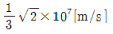
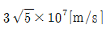
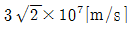
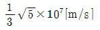
(정답률: 72%)
49. λ/4 수직접지 안테나의 실효 인덕턴스와 실효 캐패시턴스가 각각 Le, Ce일 때, λ/4 수직접지 안테나의 공진주파수 f는?
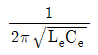
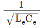
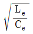
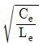
(정답률: 81%)
50. 미소 다이폴 안테나에서 생성되는 전파 중에서 원거리에서 주가되는 성분은?
- 정전계
- 정자계
- 복사계
- 유도계
(정답률: 80%)
51. 미소 루프 안테나에 대한 설명으로 틀린 것은?
- 소형으로 이동이 용이하다.
- 방향탐지, 무선표지 및 측정에 이용된다.
- 효율이 좋고 급전선과 정합이 쉽다.
- 수평면내 8자형 지향 특성을 갖는다.
(정답률: 68%)
52. 복사전력과 전계강도 사이의 관게가 올바르게 표현된 것은?
- P ∝ E2
- P ∝ E
- P ∝ √E
- P ∝ 1/E
(정답률: 78%)
53. 자유공간에 있는 반파장 다이폴 안테나의 최대 방사 방향으로 10[km]인 지점에서 측정한 전계강도가 5[mV/m]일 때, 안테나의 방사전력은?
- 약 1[W]
- 약 7[W]
- 약 51[W]
- 약 357[W]
(정답률: 75%)
54. 지상파 중 가시거리 외에서의 주가되는 파는?
- 회절파
- 전리층파
- 반사파
- 직접파
(정답률: 68%)
55. 태양 흑점수의 수에 따라 전리층의 전리 현상과 맞는 것은?
- 흑점 수가 증가할수록 전리 현상이 커진다.
- 흑점이 없으면 전리 현상은 ‘0’이 된다.
- 흑점 수가 증가할수록 전리 현상이 작아진다.
- 흑점은 전리층에 영향을 미치지 않는다.
(정답률: 75%)
56. 다음 중 대류권 전파의 감쇠에 해당되지 않는 것은?
- 강우에 의한 감쇠
- 구름, 안개에 의한 감쇠
- 바람에 의한 감쇠
- 대기에 의한 감쇠
(정답률: 85%)
57. 전리층 전파에서 동일 특성의 신호가 일정한 시간 간격으로 되풀이되는 현상은?
- 페이딩 현상
- 공전 현상
- 에코(Echo) 현상
- 델린저(Dellinger) 현상
(정답률: 80%)
58. 다음 중 지상파에 포함되지 않는 전파는 어느 것인가?
- 직접파
- 대지 반사파
- 지표파
- 전리층 반사파
(정답률: 81%)
59. 대기의 3요소에 해당되지 않는 것은?
- 기압
- 습도
- 기온
- 압력
(정답률: 83%)
60. 전리층에서 임계주파수에 대한 설명으로 틀린 것은?
- 전리층의 굴절률 n=∞일 때의 주파수
- 전리층을 반사하는 주파수 중 가장 높은 주파수
- 전리층을 통과하는 주파수 중 가장 낮은 주파수
- 전리층에서 수직 입사파의 반사와 투과의 경계 주파수
(정답률: 76%)
4과목: 전자계산기 일반 및 무선설비기준
61. 명령어의 주소 필드에 피연산자의 주소가 들어 있는 것이 아니고 실제 피연산자가 위치해 있는 유효 주소가 기억되어 있는 주소지정 방식은?
- 묵시적 주소지정 방식(implied addressing mode)
- 즉시 주소지정 방식(immediate addressing mode)
- 간접 번지 주소지정 방식(indirect addressing mode)
- 레지스터 간접 주소지정 방식(register indirect addressing mode)
(정답률: 72%)
62. 다음 중 ASCII 코드에 대한 설명으로 옳지 않은 것은?
- 1비트의 Parity 비트를 추가하여 8비트로 사용한다.
- 1개의 문자를 4개의 Zone 비트와 3개의 Digit 비트로 표현한다.
- 128가지의 문자를 표현할 수 있다.
- 통신 제어용 및 마이크로컴퓨터의 기본코드로 사용한다.
(정답률: 83%)
63. 인터넷에서 사용되는 용어 중에서 컴퓨터 사이에 파일을 전달하는데 사용되는 것은?
- FTP
- Gopher
- Archie
- Usenet
(정답률: 83%)
64. 디스크 시스템의 성능과 신뢰성을 향상시키기 위해서 디스크 드라이브의 배열을 구성하여 하나의 유니트로 패키지 함으로써 액세스 속도를 크게 향상시키고 신뢰도를 높인 것을 무엇이라 하는가?
- 자기 디스크 장치(magnetic disk unit)
- RAID(Redundant Array of Inexpensive Disks)
- 자기 테이프 장치(magnetic tape unit)
- 램 디스크 장치(RAM disk unit)
(정답률: 82%)
65. 다음 중 DRAM에 대한 설명으로 맞는 것은?
- 플립플롭 회로를 사용하여 만들어졌다.
- 모든 메모리 유형 중에서 가장 빠르다.
- 일반적으로 CPU의 레지스터나 캐시 메모리에만 사용된다.
- 저장된 데이터를 유지하기 위해 계속적으로 데이터를 새롭게 하는 것이 필요하다.
(정답률: 80%)
66. 다음 중 오류 검출용 코드에 해당하는 코드는?
- BCD 코드
- Execess-3 코드
- 해밍 코드
- Gray 코드
(정답률: 88%)
67. 제어장치(Control Unit)를 구성하는 요소라고 볼 수 없는 것은?
- 명령 레지스터(Instruction Register)
- DMA 제어기(DMA Controller)
- 명령 해독기(Instructin Decoder)
- 제어 메모리(Control Memory)
(정답률: 67%)
68. 다음 중 운영체제의 역할에 해당하지 않은 것은?
- 사용자와 컴퓨터 시스템 간의 인터페이스 정의
- 여러 사용자 간의 자원 공유
- 자원의 효율적인 운영을 위한 스케줄링
- 데이터베이스의 관리
(정답률: 71%)
69. 다음 빈칸에 들어갈 용어로 알맞은 것은?
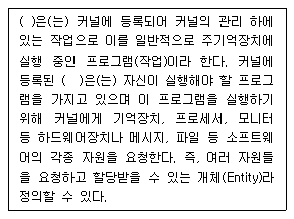
- 프로세스(Process)
- 운영체제(OS)
- 스케줄(Schedule)
- 스래드(Thread)
(정답률: 66%)
70. 2진수 10010010.011을 각각 4진수, 8진수, 16진수로 변환한 것은?
- 2302.124 262.38 B2.616
- 2202.124 242.38 A2.616
- 2402.124 252.38 D2.616
- 2102.124 222.38 92.616
(정답률: 70%)
71. 무선국의 공중선계에 낙뢰보호장치 및 접지시설을 하여야 하는 무선국은?
- 휴대용 무선설비
- 육상이동국
- 간이무선국
- 이동중계국
(정답률: 60%)
72. 다음 중 방송통신기기 지정시험기관이 행하는 시험분야로 틀린 것은?
- 유선 시험분야
- 무선 시험분야
- 전자파내성 시험분야
- 전류흡수율 시험분야
(정답률: 80%)
73. 다음 중 주파수할당을 하려는 때에 공고할 사항으로 잘못된 것은?
- 할당대상 주파수 및 대역폭
- 주파수할당 대가의 산출기준
- 주파수용도 및 기술방식
- 무선국 개설허가의 유효기간
(정답률: 69%)
74. 단측파대(SSB) 통신에서 전파형식이 J3E, R3E 및 H3E인 경우 점유주파수대폭의 허용치는?
- 3[kHz]
- 5[kHz]
- 1[MHz]
- 6[MHz]
(정답률: 79%)
75. "지정시험기관 적합등록“ 대상기자재가 아닌 것은?
- 자동차 및 불꽃점화 엔진구동기기류
- 가정용 전자기기 및 전동기기류
- 고전압설비 및 그 부속 기기류
- 정보기기의 전원 및 공중선기기류
(정답률: 62%)
76. 다음 ( )안에 들어갈 내용으로 적합한 것은?
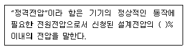
- ±2
- ±4
- ±6
- ±8
(정답률: 88%)
77. 다음 중 무선국의 개설 조건으로 틀린 사항은?
- 무선설비는 인명ㆍ재산 및 항공의 안전에 지장을 주지 아니하는 장소에 설치할 것
- 개설목적ㆍ통신사항 및 통신상대방의 선정이 법령에 위반되지 아니할 것
- 개설목적의 달성에 필요한 최소한의 주파수 및 공중선전력을 사용할 것
- 이미 개설되어 있는 다른 무선국의 주파수를 공용할 수 있을 것
(정답률: 83%)
78. 방송통신위원회가 전파산업 등의 기술개발의 촉진을 위하여 추진하여야 할 사항이 아닌 것은?
- 기술수준의 조사ㆍ연구개발 및 개발기술의 평가ㆍ활용
- 기술의 협력ㆍ지도 및 이전
- 국제기술표준과의 연계 공유개발
- 기술정보의 원활한 유통
(정답률: 68%)
79. 다음 중 주파수 분배시 고려하여야 할 사항이 아닌 것은?
- 전파이용 기술의 발전추세
- 국내의 주파수 사용 동향
- 주파수의 이용현황 등 국내의 주파수 이용여건
- 전파를 이용하는 서비스에 대한 수요
(정답률: 57%)
80. 다음 사항 중 통신보안에 대한 정의로 알맞은 것은?
- 통신 중 도청당한 정보의 분석 지연책을 강구하는 것
- 무선통신망은 풍부한 정보의 원천이므로 사용을 최소화하는 방책
- 통신수단에 의한 국가기밀, 산업정보 및 개인비밀 통화를 최소화하거나 약호화하는 방책
- 통신수단에 의하여 비밀이 직간접적으로 누설되는 것을 방지하거나 지연시키는 방책
(정답률: 76%)
불순물의 도핑 레벨을 높이면 공핍층의 너비가 좁아지고, 이로 인해 역방향 제너전압이 감소합니다. 이는 역방향 제너저항이 감소하는 것을 의미합니다. 또한, 매우 좁은 공핍충이 형성되고 강한 전계가 공핍층 내부에 존재하게 됩니다.